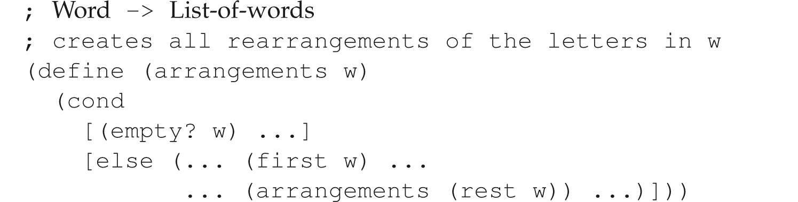
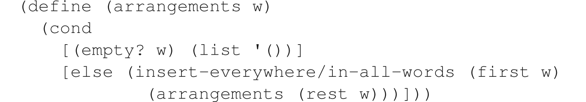
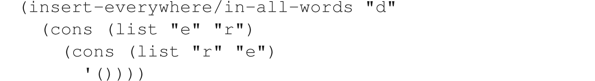

12.4 Word Games, the Heart of the Problem
The goal is to design arrangements, a function that consumes a Word and produces a list of the word’s letter-by-letter rearrangements. This extended exercise reinforces the need for deep wish lists, that is, a list of desired functions that seems to grow with every function you finish.
The mathematical term is permutations.
As mentioned, Strings could serve as a representation of words, but a String is atomic and the very fact that arrangements needs to rearrange its letters calls for a different representation. Our chosen data representation of a word is therefore a list of 1Strings where each item in the input represents a letter:
; A Word is one of:
; -- '() or
; -- (cons 1String Word)
; interpretation a Word is a list of 1Strings (letters)
Exercise 212. Write down the data definition for List-of-words. Make up examples of Words and List-of-words. Finally, formulate the functional example from above with check-expect. Instead of the full example, consider working with a word of just two letters, say "d" and "e". 
The template of arrangements is that of a list-processing function:

In preparation of the fifth step, let’s look at the template’s cond lines:
1. If the input is '(), there is only one possible rearrangement of the input: the '() word. Hence the result is (list '()), the list that contains the empty list as the only item.
2. Otherwise there is a first letter in the word, and (first w) is that letter. Also, the recursion produces the list of all possible rearrangements for the rest of the word. For example, if the list is
(list "d" "e" "r")
then the recursion is (arrangements (list "e" "r")). It will produce the result
To obtain all possible rearrangements for the entire list, we must now insert the first item, "d" in our case, into all of these words between all possible letters and at the beginning and end.
Our analysis suggests that we can complete arrangements if we can somehow insert one letter into all positions of many different words. The last aspect of this task description implicitly mentions lists and, following the advice of this chapter, calls for an auxiliary function. Let’s call this function insert-everywhere/in-all-words and let’s use it to complete the definition of arrangements:

Exercise 213. Design insert-everywhere/in-all-words. It consumes a 1String and a list of words. The result is a list of words like its second argument, but with the first argument inserted at the beginning, between all letters, and at the end of all words of the given list.
Start with a complete wish-list entry. Supplement it with tests for empty lists, a list with a one-letter word, and another list with a two-letter word, and the like. Before you continue, study the following three hints carefully.
Hints (1) Reconsider the example from above. It says that "d" needs to be inserted into the words (list "e" "r") and (list "r" "e"). The following application is therefore one natural candidate for an example:

(2) You want to use the BSL+ operation append, which consumes two lists and produces the concatenation of the two lists:
> (append (list "a" "b" "c") (list "d" "e"))
(list "a" "b" "c" "d" "e")
The development of functions like append is the subject of chapter 23.
(3) This solution of this exercise is a series of functions. Patiently stick to the design recipe and systematically work through your wish list.
Exercise 214. Integrate arrangements with the partial program from chapter 12.3. After making sure that the entire suite of tests passes, run it on some of your favorite examples.